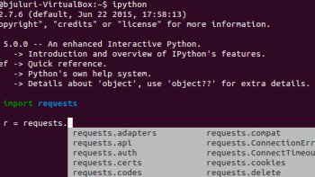

Tab autocompletetion with python interpreter in bash terminal
Posted on Sat 29 October 2016 in Misc
I want to tab autocomplete commands in my python interpreter within bash terminal. This is very useful when I import a module and just want to browse through the methods and autocomplete.
Found two ways to do it. Thanks to stack overflow posts.
Method 1 (as mentioned here):
This is easy. Install pyreadline (pip install pyreadline) and use ipython. This is a snapshot of it working.

Method 2 ( as mentioned here):
This is for standard python interpreter in bash terminal (such as in Ubuntu). This method requires readline and rlcompeter modules. Install these modules if you do not have them installed. This can be done with pip.
Basically, the idea is to have a python interpreter look for the value of environment path variable "PYTHONSTARTUP". This variable should be set to a location for the file ("python startup file.py") with commands that enable tab autocompletion.
In my home directory "/home/bjuluri" I make a file called "python startup file.py" by
bjuluri@bjuluri-VirtualBox:\~\$ gedit python startup file.py
copy and paste following lines
try:
import readline
except ImportError:
print "Module readline not available."
else:
import rlcompleter
readline.parse and bind("tab: complete")
Save and close the file.
Now lets assign the an environmental variable "PYTHONSTARTUP" to the location of this "python startup file"
./bashrc is loaded whenever a bash terminal is fired. This file sits in the user's home directory, we will edit it and assign the environmental variable at the end of the file.
nano .bashrc
at the end of the file, copy and paste
export PYTHONSTARTUP="python startup file.py"
Save the file and exit.
reload the .bashrc file in terminal by either opening a new terminal or by typing the following in the current terminal.
source .bashrc
Once those commands run at the python startup, tab autocompletion with suggestions will be enabled in the interpreter.